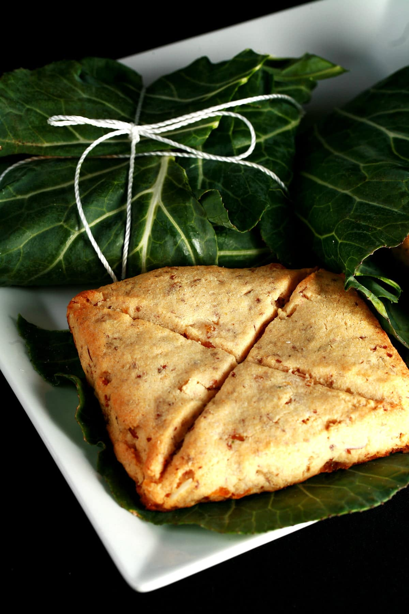

Some Lovely Lembas
The next time you go on a hike, make some of this lembas bread from Lord of the Rings.
After all, “one small bite is enough to fill the stomach of a grown man!”
Ingredients
- 2 1/2 c all purpose flour
- 1 Tbsp baking powder
- 1/4 tsp salt
- 1/2 butter
- 1/3 c brown sugar
- 1 tsp cinnamon
- 1/2 tsp honey
- 2/3 c heavy whipping cream
- 1/2 tsp vanilla extract
Steps
- Preheat oven to 425F. Mix the flour, baking powder and salt into a large bowl. Add the butter and mix with a well till fine granules (easiest way is with an electric mixer). Then add the sugar and cinnamon, and mix them thoroughly.
- Finally add the cream, honey, and vanilla and stir them in with a fork until a nice, thick dough forms.
- Roll the dough out about 1/2 in thickness. Cut out 3-inch squares and transfer the dough to a cookie sheet.Criss-cross each square from corner-to-corner with a knife, lightly (not cutting through the dough).
- Bake for about 12 minutes or more (depending on the thickness of the bread) until it is set and lightly golden.
- Let cool completely before eating, this bread tastes better room temperature and dry. Also for more flavor you can add more cinnamon or other spices
Return to top
Return to main page